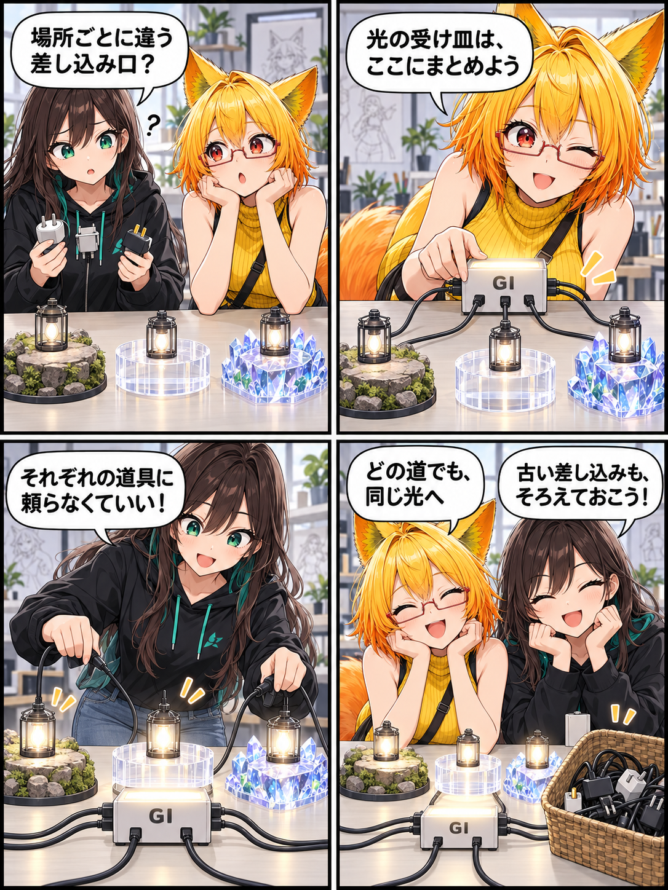

光の受け皿を、パスごとに選ばない日
アバターShaderへ間接光をつなぐとき、描画パスごとに違う道具を前提にすると、通れない道が生まれます。今回はAdaptiveGIの橋渡しを共通化し、lilToonとPotaToonの各パスが必要な情報だけを渡せるように整えました。

パスごとの持ち物にしない
AdaptiveGIをlilToonとPotaToonの描画へ足すとき、従来の呼び出しには各パスのサンプラが渡されていました。しかしアウトラインや透明などのパスには、同じサンプラが常にあるとは限りません。そこで共有のAdaptiveGICompatibility.hlslがサンプラを所有し、呼び出し側はワールド座標と法線だけを渡す二引数の橋渡しへ改めました。
既存の統合も安全に更新する
lilToonのパッチャーは、共通マクロファイルがある場合だけパッチし、既に印を持つ古い三引数の呼び出しは二引数へ更新します。PotaToonでも通常・目・宝石・Simple Toonのそれぞれを同じ方針へそろえました。未知のレイアウトへ無理に書き込むのではなく、期待するアンカーを確認してから処理します。
回帰テストを追加
PotaToonの公式トラブルシューティング向けテストを追加し、対象パスと、sampler_MainTexやsampler_linear_mirrorへの依存を残さないことを検査します。既存のパッチ済みソースを更新する経路もテスト対象です。
この日記で記しているのは集計期間内にコミットされたコードの内容です。日記制作時点でUnity実行、VR実機、性能計測、リリース確認は行っていません。
4コマの裏話
小さなランタンを同じ配電箱へつなぐ場面は、パスごとのサンプラを渡す代わりに共通ブリッジがサンプラを持つ設計の比喩です。実際のアプリ画面やベンチマークを表していません。
まとめ
AdaptiveGIの共通ブリッジへサンプラを集め、lilToonとPotaToonの各描画パスはワールド座標と法線だけを渡す形にそろえました。既存統合の更新と対象パスのテストも加え、パス固有のサンプラに依存しない道筋を整えています。
本日のひとこと
同じ光なら、受け皿もひとつでいい。